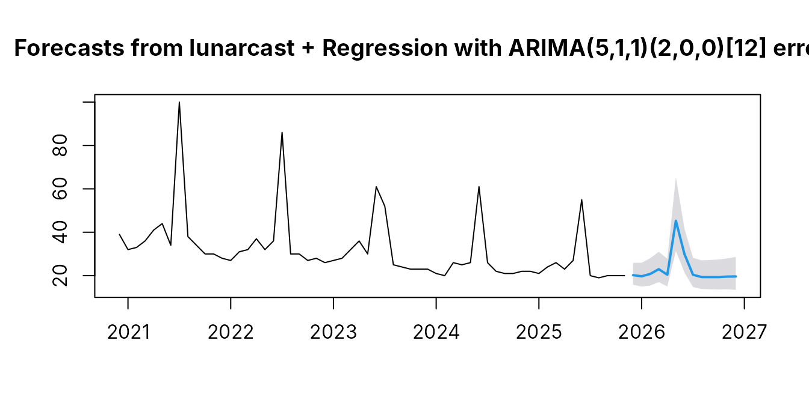

lunarcast forecasts monthly and quarterly series that react to
moving holidays: holidays such as Eid al-Fitr, Eid
al-Adha, the Chinese New Year or Easter, whose Gregorian date changes
every year. This vignette walks through a complete analysis. The method
is explained in vignette("theory") and compared with the
classical calendar variation model in
vignette("classic-vs-lunarcast").
Installation
# install.packages("pak")
pak::pak("novrisuhermi/lunarcast")
# or, with vignettes
# install.packages("remotes")
remotes::install_github("novrisuhermi/lunarcast", build_vignettes = TRUE)The data
The package contains sapi, the monthly Google Trends
index for “sapi” (cattle) in Indonesia. Interest peaks before Eid
al-Adha, when cattle are bought for the sacrifice.
library(lunarcast)
plot(sapi, xlab = "", ylab = "Google Trends index",
main = "Search interest in \"sapi\"")Two features make this series hard: the peaks move to an earlier month every few years, and their size changes, from almost nothing in 2004 to more than three times the usual level in the late 2010s.
Step 1: holiday dates
adha <- holiday_dates("idul_adha")
tail(adha, 4)
#> [1] "2024-06-17" "2025-06-06" "2026-05-27" "2027-05-17"holiday_dates() gives the Indonesian dates of Eid
al-Adha, Eid al-Fitr and the Chinese New Year from 2004 to 2027, and
easter_dates() computes Easter and the holidays that follow
from it. Any other holiday is simply a vector of dates.
easter_dates(2025:2026, offset = -2) # Good Friday
#> [1] "2025-04-18" "2026-04-03"
my_holiday <- as.Date(c("2024-03-11", "2025-03-29", "2026-03-19"))Step 2: from dates to regressors
A holiday influences the days around it, not a calendar month.
holiday_window() computes the share of a window of days
around each occurrence that falls in each month.
w <- holiday_window(adha, window = c(-3, 7), y = sapi)
window(w, start = c(2020, 6), end = c(2020, 9))
#> Jun Jul Aug Sep
#> 2020 0.0000000 0.3636364 0.6363636 0.0000000Eid al-Adha fell on 31 July 2020. The window from three days before
to seven days after puts 36% of the holiday in July and 64% in August,
where the searches indeed peaked. A monthly dummy would have put
everything in July. You do not need to build these regressors yourself;
lunarcast() does it and chooses the window.
Step 3: fit the automatic model
hol <- list(adha = holiday_dates("idul_adha"),
fitri = holiday_dates("idul_fitri"))
fit <- lunarcast(sapi, hol)
fit
#> lunarcast: Regression with ARIMA(5,1,1)(2,0,0)[12] errors | AICc = -296.9
#> Structure (cv, 1se): stochastic + SARMA(2,0,0), d = 1
#> Cross-validated RMSE of the candidate structures:
#> structure RMSE SE
#> stochastic + SARMA(2,0,0) 4.53 1.017
#> stochastic + fourier(K=4) 5.08 0.821
#> stochastic + dummy 5.10 0.795
#> stochastic + none 5.86 0.962
#>
#> adha: two-level effect, window [-3, +7] days, level 2 = wmean (CV-RMSE 0.13)
#> event alpha se ratio
#> 2004-02-01 -0.0712 0.1816 0.931
#> 2005-01-21 0.1664 0.1196 1.181
#> 2006-01-10 -0.1558 0.1029 0.856
#> 2006-12-31 -0.5505 0.1860 0.577
#> 2007-12-20 0.1819 0.0964 1.199
#> 2008-12-08 0.2440 0.0978 1.276
#> 2009-11-27 0.4874 0.1452 1.628
#> 2010-11-17 0.5180 0.0976 1.679
#> 2011-11-06 0.5801 0.1003 1.786
#> 2012-10-26 0.8234 0.1213 2.278
#> 2013-10-15 0.9386 0.0980 2.556
#> 2014-10-05 0.8655 0.0993 2.376
#> 2015-09-24 0.9935 0.1108 2.701
#> 2016-09-12 1.0087 0.1012 2.742
#> 2017-09-01 1.2335 0.1277 3.433
#> 2018-08-22 1.1742 0.0980 3.236
#> 2019-08-11 1.1629 0.0981 3.199
#> 2020-07-31 1.1167 0.1392 3.055
#> 2021-07-20 1.0764 0.0985 2.934
#> 2022-07-10 1.0088 0.0979 2.742
#> 2023-06-29 1.1770 0.1382 3.245
#> 2024-06-17 0.8363 0.1013 2.308
#> 2025-06-06 0.8326 0.1057 2.299
#>
#> fitri: constant effect, window [-28, +3] days
#> alpha se ratio
#> 0.147 0.0346 1.16How to read the output:
- The first line is the fitted regression with ARIMA errors and its AICc.
-
Structureis the selected trend and seasonal structure. The trend type comes from KPSS tests; the table below it lists the candidate seasonal structures with their cross-validated RMSE and its standard error. The default one-SE rule takes the simplest structure within one standard error of the best. - For each holiday you see whether its effect is
constantortwo-level, the selected window in days around the holiday and, for two-level effects, the level-2 rule used to forecast the next effect. -
ratiois the multiplicative effect : 2.5 means that the holiday (when its whole window falls in one month) multiplies the level of that month by 2.5.
Step 4: inspect the holiday effects
eff <- holiday_effects(fit)
head(eff, 4)
#> holiday type event alpha se ratio
#> 1 adha two-level 2004-02-01 -0.0712326 0.1815594 0.9312453
#> 2 adha two-level 2005-01-21 0.1663557 0.1196175 1.1809931
#> 3 adha two-level 2006-01-10 -0.1557509 0.1028979 0.8557724
#> 4 adha two-level 2006-12-31 -0.5505277 0.1859972 0.5766455
plot(fit)Each point is the effect of one Eid al-Adha with its 95% confidence interval; the open circle is the forecast for the next occurrence. The effect grew until the late 2010s and has declined since, which a single constant effect cannot represent.
Step 5: forecast

fc$future_effects
#> $adha
#> event alpha se method ratio
#> 1 2026-05-27 0.9095093 0.126112 wmean 2.483104
round(cbind(forecast = fc$mean, lower = fc$lower[, 1],
upper = fc$upper[, 1]), 1)
#> forecast lower upper
#> Dec 2025 20.2 15.8 25.9
#> Jan 2026 19.7 15.0 25.9
#> Feb 2026 20.8 15.4 28.0
#> Mar 2026 23.0 17.0 31.0
#> Apr 2026 20.4 15.0 27.8
#> May 2026 45.3 31.3 65.4
#> Jun 2026 29.9 21.5 41.7
#> Jul 2026 20.4 14.8 28.2
#> Aug 2026 19.4 13.8 27.1
#> Sep 2026 19.3 13.7 27.2
#> Oct 2026 19.3 13.6 27.5
#> Nov 2026 19.6 13.7 27.9
#> Dec 2026 19.6 13.4 28.6The forecast is the median on the original scale with a 95% interval
that includes the uncertainty about the next holiday effect.
fc$future_effects shows the effect used for each new
occurrence and the rule that produced it.
Taking control of the automatic choices
Every automatic choice can be fixed, which also makes fitting much faster.
| Argument | What it controls | Example |
|---|---|---|
window |
days around each holiday | window = list(adha = c(-3, 7), fitri = c(-28, 3)) |
effect |
constant or two-level effect | effect = list(adha = "two-level", fitri = "constant") |
trend, season
|
trend and seasonal structure |
trend = "stochastic", season = "none";
trend = "cv" compares both trend types |
select |
how the structure is chosen | select = "aicc" |
cv_rule, cv_years
|
cross-validation rule and origins | cv_rule = "min", cv_years = 3 |
level2 |
rule for future effects | level2 = list(adha = "rw") |
outliers |
detect AO, LS and TC outliers | outliers = TRUE |
lambda |
transformation (0 = log) |
lambda = NULL for additive effects |
fast <- lunarcast(sapi, hol,
window = list(adha = c(-3, 7), fitri = c(-28, 3)),
effect = list(adha = "two-level", fitri = "constant"),
trend = "stochastic", season = "none")
fast
#> lunarcast: Regression with ARIMA(5,1,1) errors | AICc = -281.2
#> Structure (fixed): stochastic + none, d = 1
#>
#> adha: two-level effect, window [-3, +7] days, level 2 = wmean (CV-RMSE 0.12)
#> event alpha se ratio
#> 2004-02-01 -0.227 0.1864 0.797
#> 2005-01-21 0.140 0.1116 1.150
#> 2006-01-10 -0.188 0.1043 0.828
#> 2006-12-31 -0.412 0.1886 0.663
#> 2007-12-20 0.220 0.0993 1.246
#> 2008-12-08 0.269 0.0994 1.309
#> 2009-11-27 0.544 0.1537 1.723
#> 2010-11-17 0.524 0.1003 1.689
#> 2011-11-06 0.605 0.1003 1.831
#> 2012-10-26 0.860 0.1253 2.363
#> 2013-10-15 0.973 0.0998 2.645
#> 2014-10-05 0.885 0.1001 2.424
#> 2015-09-24 1.080 0.1129 2.944
#> 2016-09-12 1.141 0.0994 3.129
#> 2017-09-01 1.353 0.1318 3.871
#> 2018-08-22 1.123 0.0993 3.074
#> 2019-08-11 1.152 0.1002 3.166
#> 2020-07-31 1.034 0.1473 2.811
#> 2021-07-20 1.000 0.0993 2.718
#> 2022-07-10 0.957 0.0997 2.604
#> 2023-06-29 1.151 0.1458 3.162
#> 2024-06-17 0.891 0.0994 2.438
#> 2025-06-06 0.855 0.1011 2.350
#>
#> fitri: constant effect, window [-28, +3] days
#> alpha se ratio
#> 0.159 0.0303 1.17The classical model
The classical calendar variation model, with a dummy for the holiday month and the same effect every year, is available in the six structures m1 to m6:
m6 <- calvar_classic(sapi, adha, trend = "stochastic", season = "stochastic")
m6
#> Classical calendar variation model: stochastic trend + stochastic seasonality
#> Regression with ARIMA(1,1,1)(1,0,2)[12] errors | AICc = 1708.9
#> Holiday effect (same every year): 18.92 (s.e. 2.01), original scalecalvar_classic_all() fits all six at once, and
forecast() works for both kinds of models. The two
approaches are compared in
vignette("classic-vs-lunarcast").
Evaluating forecasts
rolling_origin() refits models at the end of every year
and forecasts the next year; rolling_summary() reports the
RMSE overall, in holiday months, in years in which the holiday moved to
another month, and the median of the yearly RMSEs.
models <- list(
classic_m6 = function(y, h)
forecast(calvar_classic(y, adha, "stochastic", "stochastic"), h = h)$mean,
lunarcast = function(y, h) forecast(lunarcast(y, hol), h = h)$mean
)
r <- rolling_origin(sapi, adha, models, first = 2012)
rolling_summary(r)forecast_accuracy() gives RMSE, MAE, MAPE and sMAPE for
a single test period.